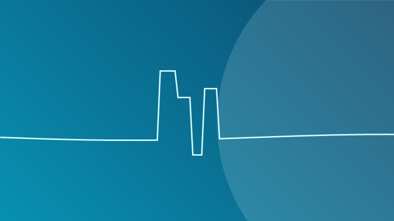

Los avances del neurointervencionismo en el Perú

El Perú ha vivido una transformación silenciosa pero decisiva en la atención de enfermedades cerebrales gracias al neurointervencionismo. Este artículo resume la evolución de esta especialidad en nuestro país y su impacto en la salud pública.
El punto de partida: 2015
En julio de 2015 entró en funcionamiento el angrágrafo rotacional 3D en la Unidad de Neurocirugía del Hospital Nacional Daniel Alcides Carrión del Callao. Ese año se realizaron 171 procedimientos (diagnósticos y terapéuticos). El crecimiento fue vertiginoso:
- 2015: 171 procedimientos.
- 2016: 367 procedimientos.
- 2017: 327 intervenciones.
- 2018: 461 procedimientos.
- 2020-2024: consolidación de la unidad, superando los 3,000 procedimientos acumulados, con aproximadamente 436 intervenciones solo en 2023.
Una unidad única en el Perú
La Unidad de Neurointervencionismo es la única en el Perú y dentro de los hospitales MINSA con infraestructura y personal dedicado exclusivamente al diagnóstico y tratamiento de enfermedades cerebrovasculares. Atiende de lunes a sábado, de 8:00 a.m. a 8:00 p.m.
Salvando vidas sin cortes ni sangrados
Con solo una punción en la ingle, se introducen microcatéteres hasta el cerebro. Gracias al angiógrafo se detectan infartos, malformaciones, aneurismas y derrames cerebrales, y se decide el mejor tratamiento sin necesidad de cirugía abierta.
Esta técnica ha permitido atender a pacientes referidos de otros hospitales de Lima y provincias, tratándolos y devolviéndolos a sus unidades de cuidados intensivos de origen, descongestionando los ambientes hospitalarios.
Exposición mediática y concienciación
La labor de la unidad y su equipo ha sido cubierta por medios nacionales como la Agencia Andina y programas de televisión, ayudando a concientizar sobre el ACV y las patologías cerebrales. La atención de figuras públicas como la animadora Yola Polastri, operada exitosamente por un aneurisma cerebral, demostró al país la capacidad y calidad de la neurocirugía peruana.
Investigación con proyección internacional
La unidad también contribuye a la ciencia. Trabajos colaborativos sobre malformaciones arteriovenosas cerebrales y aneurismas han sido publicados en revistas internacionales indexadas como Journal of Neurosurgery y Acta Neurochirurgica, validando con evidencia las decisiones clínicas.
El futuro
El desafío es expandir el acceso: que más hospitales del MINSA cuenten con equipamiento endovascular y personal entrenado, y que la población conozca los signos de alarma del ACV para llegar a tiempo. El camino ya está trazado, y los resultados son la mejor evidencia de que la medicina peruana está a la altura de los estándares mundiales.